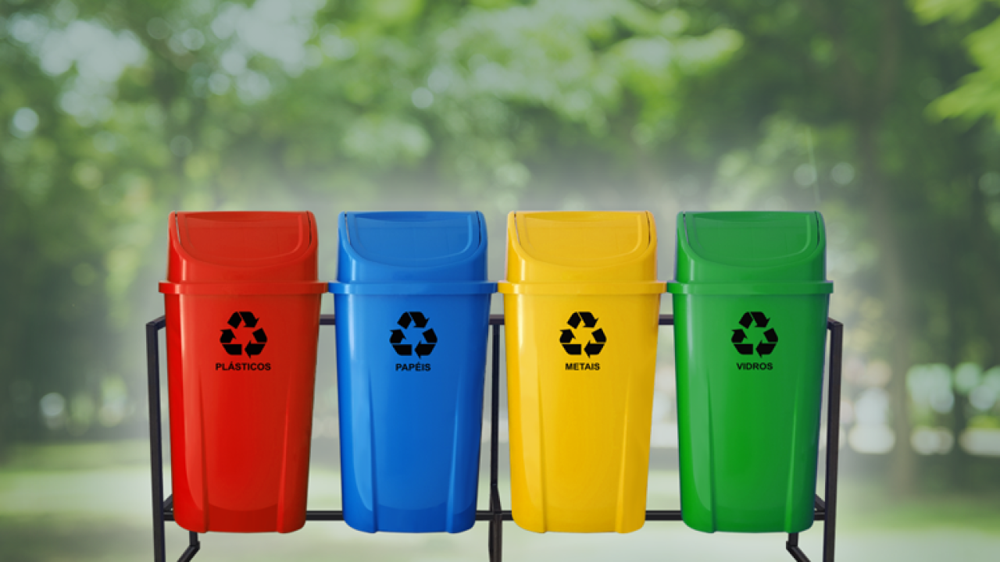

Reciclagem!
Aqui onde voce encontra tudo sobre reciclagem e o seu processo

O que é reciclagem
A reciclagemclagem ela e uma forma de minimizar a poluição no meio ambiente por causa do descarte de lixo, reutilizando os materiais que seriam jogados fora exemplo: Plástico, Papel, Vidro, Metal e Madeira. Existe uma forma de organizar a separação desse material em lixeiras especificas organizadas por cor exemplo:
Isso ajuda no processo de reciclagem por tanto e necessário estar atento no processo de separação, esses materiais passaram em usinas de reciclagem onde serão reaproveitados e transformados em novas matérias-primas portanto a reciclagem não só ajuda o meio ambiente mais também a economia gerando empregos e renda para as pessoas e empresas fazendo parte da (economia circular). Algumas empresas elas adotaram o processo de reciclar seus resíduos que sobraram de suas produções e os transformando em novas matéias primas aumentando seu lucro e contribuindo para o meio ambiente.
Os impactos negativos que lixo não reciclável pode causar no meio ambiente: Poluição dos oceanos por plástico vidro e outros materiais que podem ser nocivos a vida marinha ou contaminar a água, poluição do ar atravs da queima de papel madeira liberando monóxido de carbono e outros gases poluentes, entupimento de bueiros causando alagamentos, diminuindo o tempo útil de aterros Sanitário, por esses e outros motivos e importante reciclar e minimizar os impactos nocivos que o descarte de lixo pode causar ao meio ambiente.